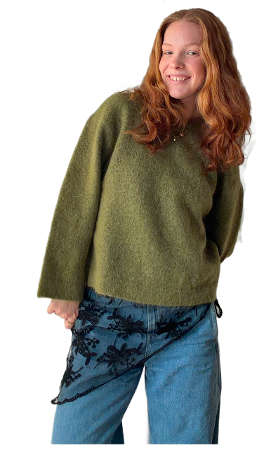
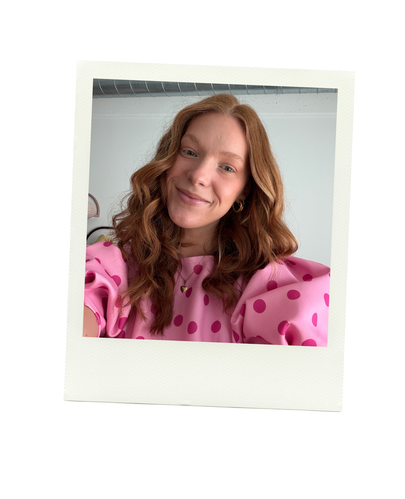

Et eksamensprojekt fra 1. semester, hvor jeg udviklede mit eget portfolio med fokus på visuel identitet, design og brugeroplevelse. Jeg arbejdede med at skabe en sammenhængende digital løsning gennem valg af farver, typografi, layout og interaktive elementer. Projektet gav mig erfaring med at kombinere æstetik og funktionalitet og skabe en personlig digital oplevelse.
Se projektEmilie
Skovgaard
Erikson
Multimediedesigner


Om Mig
Jeg studerer multimediedesign på 3. semester på EK og interesserer mig især for at skabe digitale løsninger, hvor design og funktionalitet går hånd i hånd. Jeg kan godt lide at arbejde med kode og frontend-udvikling, men synes også den kreative og visuelle del af projekterne er spændende. Jeg nyder at arbejde med at finde idéer, skabe grafiske elementer og udvikle løsninger, der både fungerer godt og ser interessante ud. Jeg er nysgerrig af natur og kan godt lide at lære nye værktøjer, teknikker og prøve forskellige måder at løse opgaver på.

Uddannelse
2017-2028: Sportsefterskolen Sjælsølund
Badminton
2018-2021: STX - Allerød gymnasium
Team Danmark
2023-2024: Danmarks tekniske universitet
Software teknologi
2025-2027: Erhvervsakademiet København
Multimediedesign
Erhvervserfaring
2022-2024: Grey Matter
Lager- og kundeservicemedarbejder
2024-2025: Månesten
Juleassistance - Lagermedarbejder
2025-nu: Bonnier Publications / Komputer for Alle
Studentermedhjælper
Teknologier
- HTML
- CSS
- JavaScript
- Figma
- Adobe Illustrator
- After Effects
- GitHub
- Astro
- React
- Next.js
- Tailwind CSS
- WordPress
- Microsoft Office pakken
Projekter
Portfolio website
Mini spil
Dette projekt består af et mindre spil udviklet i JavaScript med fokus på at implementere interaktiv funktionalitet og logik gennem kode. Formålet var at opnå en bedre forståelse for, hvordan JavaScript kan anvendes til at skabe dynamiske brugeroplevelser. Samtidig er alle visuelle elementer designet og illustreret fra bunden i Adobe Illustrator, hvilket har givet mulighed for at skabe et sammenhængende og personligt visuelt udtryk.
Se projektet på GitHubToDo app
En interaktiv ToDo-app med fokus på en enkel og brugervenlig oplevelse. Brugeren kan oprette, færdiggøre, gendanne og slette opgaver med tydelig visuel feedback. Projektet har styrket mine færdigheder i JavaScript og DOM-manipulation, hvor jeg har arbejdet med eventhåndtering, dynamisk indhold og strukturering af data.
Se projektet på GitHubDesign-to-Code med Astro
I dette projekt har jeg omsat et Figma-design til et fuldt responsivt website udviklet i Astro. Fokus har været på semantisk HTML, moderne CSS og en vedligeholdelsesvenlig struktur. Jeg har arbejdet med teknikker som container queries, design tokens og progressive enhancement for at sikre en robust løsning på tværs af browsere. Projektet har givet mig en stærkere forståelse for design-til-kode-processen og moderne frontend-udvikling. Projektet er udarbejdet som en del af mit 3. semester.
Se projektet på GitHubRedesign af website
I dette eksamensprojekt fra 2. semester arbejdede jeg i et team med at redesigne hjemmesiden for den mexicanske restaurant PocoLoco. Projektet havde fokus på at skabe en bedre digital brugeroplevelse og udvikle en løsning, der kunne understøtte deres nye koncept “Taco To Go”. Jeg arbejdede blandt andet med design, visuel identitet, brugeroplevelse og udvikling af en pop-up kampagne. Her designede jeg to forskellige versioner med henblik på en fremtidig A/B-test, hvor formålet var at undersøge, hvilken løsning der bedst fangede brugernes opmærksomhed.
Se projektet på GitHub